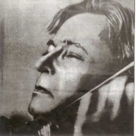
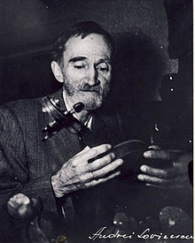

Cultura
-
Constantin Brancusi

In decembrie 1956, la Muzeul de Arta al Republicii din Bucuresti s-a deschis prima expozitie personala Brancusi din Europa.
-
Lucian Blaga
Eu nu strivesc corola de minuni a lumii" este poezia ce deschide volumul Poemele luminii al lui Lucian Blaga in 1919.
-
George Enescu
Enescu publica "Simfonia nr.3 in Do major pt orchestra si cor".
-
Nichita Stanescu
Debuteaza in martie 1957 cu trei poezii in revistele "Tribuna" si "Gazeta literara".
-
Marin Preda
In 1955 apare primul volum din Morometii, publica la "Editura de Stat pt. literatura si arta". 1967 vol. 2.
-
George Calinescu
Publica in 1932 lucrarea biografica "Viata lui Mihai Eminescu".
-
George Bacovia
In 1924 apare a doua editie a vol. "Plumb" la Ramnicu Sarat.
-
Tudor Arghezi
In 1927 apare primul sau volum de poezii "Cuvinte potrivite".
-
Victor Iliu
In 1955 este produs filmul romanesc "La moara cu noroc", ecranizat dupa nuvela "Moara cu noroc" (Ioan slavici, 1881).
-
Mircea Cartarescu
Debuteaza cu poezii la "Cenaclul de luni" si in "Romania Literara" in 1978.